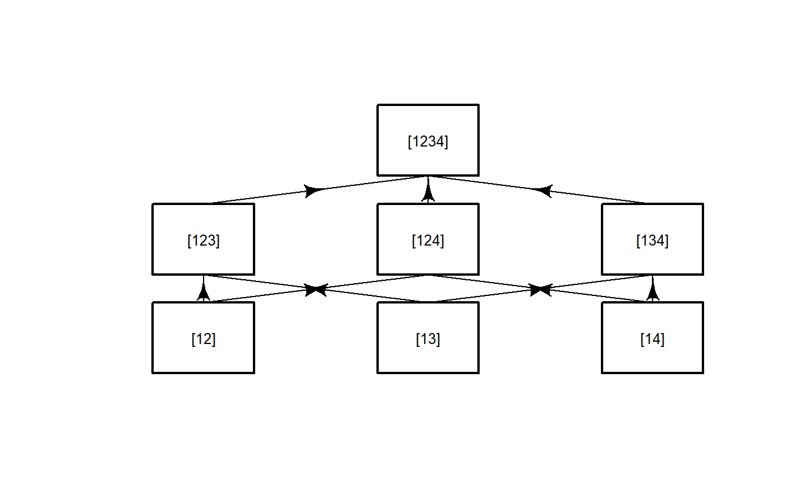
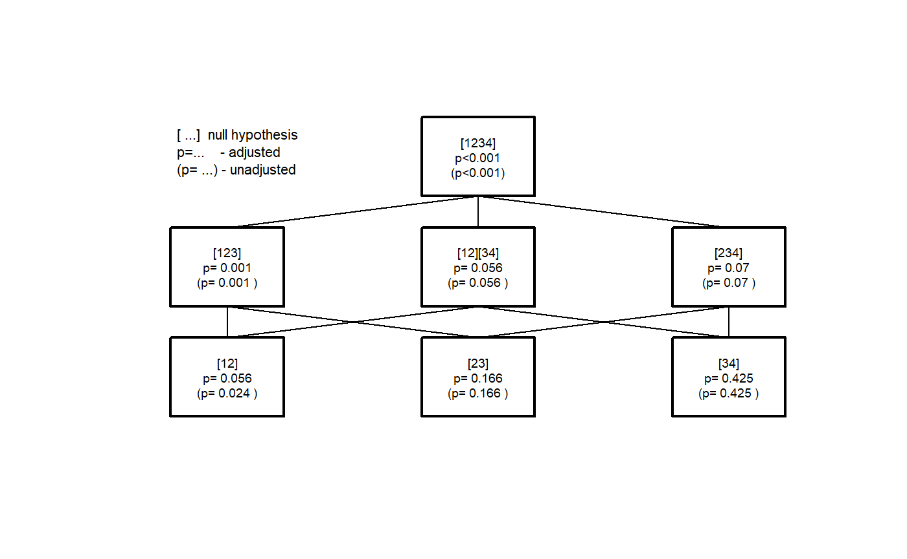
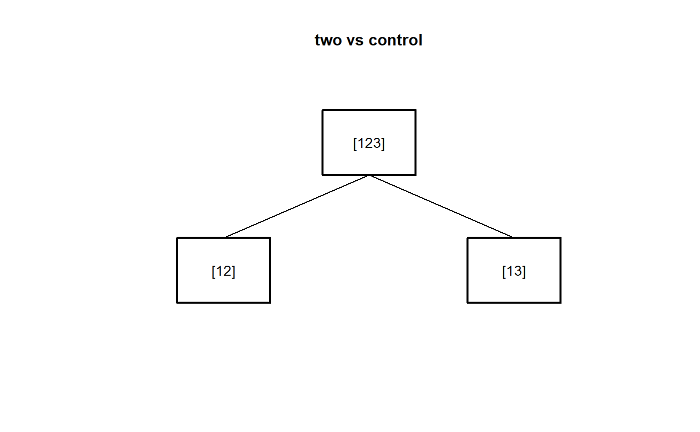
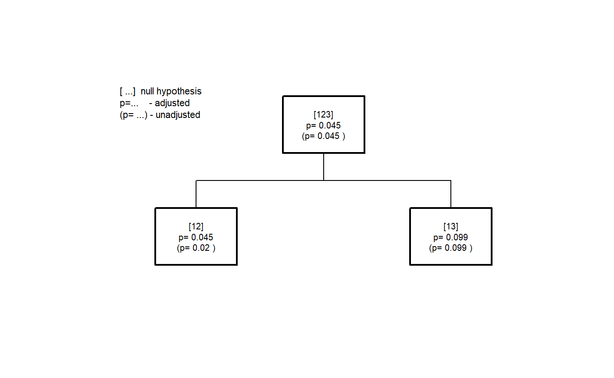
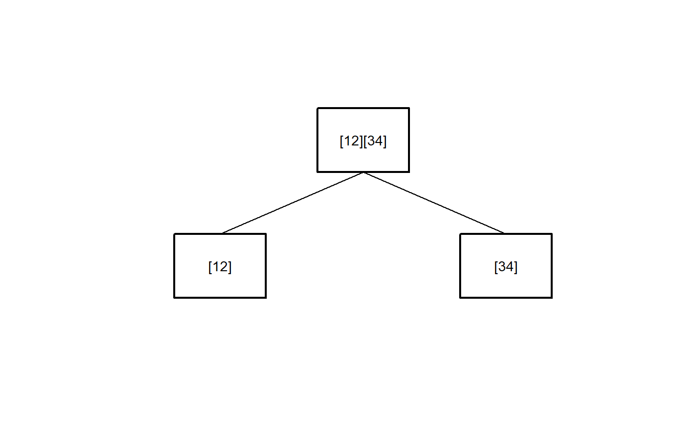
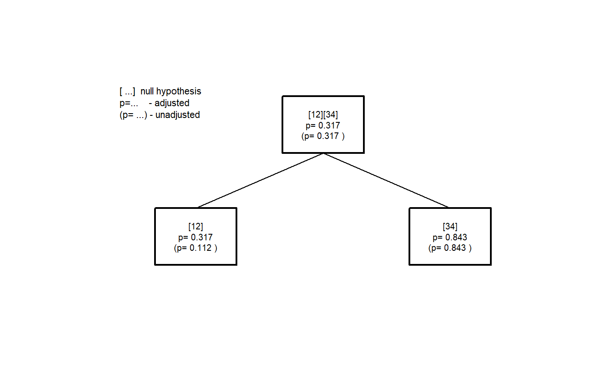
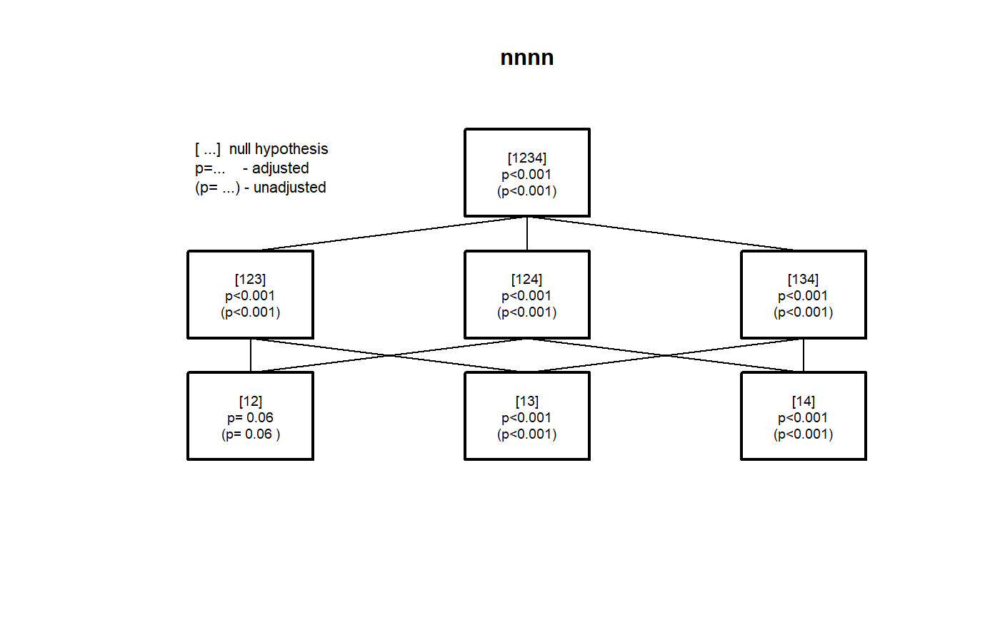
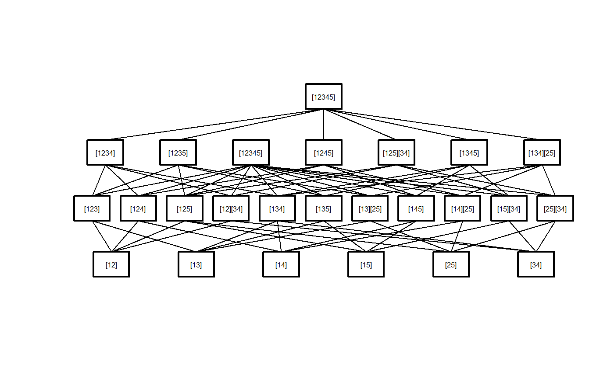
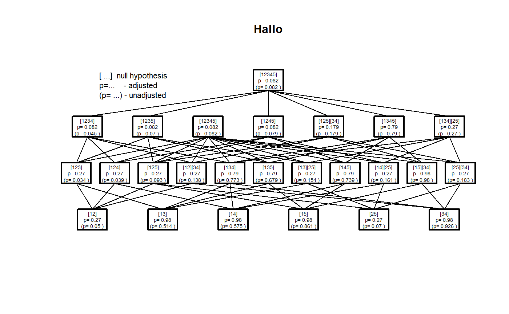
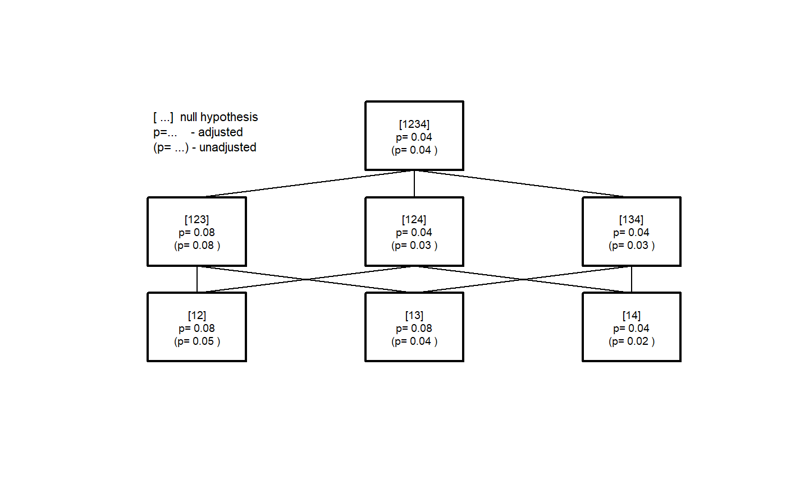

CTP.RmdThe hypothesis tree of the closed testing procedure must be created using IntersectHypotheses.
Then ctp.compare is used to calculate the raw p-value for each of the hypotheses included in the hypothesis tree. In case of single hypotheses (ie. if the hypothesis can be described by a single integer vector eg. (1,3,5) the test (F-Test, Kruskal-Wallis-test, probability test, logrank test, ….) is applied directly.
For combined hypotheses (i.e. for hypotheses described by several non-overlapping integer vectors eg. (1,2), (3,4), The procedure differs for the F-test and other tests.
In case of the F-test the contrast matrices for the single hypotheses included are combined and these contrasts are tested simultaneously. For all other tests first the p-values \(p_1, p_2, \ldots ,p_m\) for the single hypotheses are calculated, and than these are combined by Fisher’s combination rule:
If all m hypotheses are assumed to be independet, the test stastics X follows under \(H_0\) a chi-squared distribution with 2m degrees of freedom: \[ X=-2\sum_{i=1}^{m}\ln(p_i) \sim \chi_{2m}^2\] from which a p-value for the global hypothesis can be easily obtained.
In case of trend tests the same type of test is applied for all intermediate single tests.
Finally the p-values are adjusted by calculating the maximum of the p-values of all tests used at certain stage of the CTP to decide on the hypothesis in question.
library(CTP)
data(pasi)
three.to.first <- IntersectHypotheses(list(1:2,c(1,3),c(1,4)))
Display(three.to.first,Type="s",arrow=TRUE)
pasi.ctp.F1 <- AnalyseCTP(three.to.first,pasi.ch~dose,pasi)
xsx <- summary(three.to.first)
##
## Hypotheses to be tested
## =======================
##
## hyp.no level hypothesis.name
## 1 1 [12]
## 2 1 [13]
## 3 1 [14]
## 1 2 [123]
## 2 2 [124]
## 3 2 [134]
## 1 3 [1234]
##
## Connection structure of the hypotheses
## ======================================
##
## Level Connection
## 1 [12] -> [123]
## 1 [12] -> [124]
## 1 [13] -> [123]
## 1 [13] -> [134]
## 1 [14] -> [124]
## 1 [14] -> [134]
## 2 [123] -> [1234]
## 2 [124] -> [1234]
## 2 [134] -> [1234]
summary(pasi.ctp.F1)
##
## Summary of Closed Testing Procedure
## ===================================
##
## Model : pasi.ch ~ dose , test : F
##
## Factor levels: 1=Placebo, 2=ET.10mg, 3=ET.25mg, 4=ET.50mg
##
## Hypotheses and p-values
## -----------------------
##
## Hypothesis Level raw p-value adj. p-value
## [12] 1 4.748e-03 4.748e-03
## [13] 1 2.737e-05 1.063e-04
## [14] 1 1.826e-06 9.797e-06
## [123] 2 1.063e-04 1.063e-04
## [124] 2 9.797e-06 9.797e-06
## [134] 2 1.736e-06 6.542e-06
## [1234] 3 6.542e-06 6.542e-06
Display(pasi.ctp.F1)
data(pasi)
three.to.first <- IntersectHypotheses(list(1:2,c(1,3),c(1,4)))
Display(three.to.first,Type="s",arrow=TRUE)pasi.ctp.F1 <- AnalyseCTP(three.to.first,pasi.ch~dose,pasi)
xsx <- summary(three.to.first)
##
## Hypotheses to be tested
## =======================
##
## hyp.no level hypothesis.name
## 1 1 [12]
## 2 1 [13]
## 3 1 [14]
## 1 2 [123]
## 2 2 [124]
## 3 2 [134]
## 1 3 [1234]
##
## Connection structure of the hypotheses
## ======================================
##
## Level Connection
## 1 [12] -> [123]
## 1 [12] -> [124]
## 1 [13] -> [123]
## 1 [13] -> [134]
## 1 [14] -> [124]
## 1 [14] -> [134]
## 2 [123] -> [1234]
## 2 [124] -> [1234]
## 2 [134] -> [1234]
summary(pasi.ctp.F1)
##
## Summary of Closed Testing Procedure
## ===================================
##
## Model : pasi.ch ~ dose , test : F
##
## Factor levels: 1=Placebo, 2=ET.10mg, 3=ET.25mg, 4=ET.50mg
##
## Hypotheses and p-values
## -----------------------
##
## Hypothesis Level raw p-value adj. p-value
## [12] 1 4.748e-03 4.748e-03
## [13] 1 2.737e-05 1.063e-04
## [14] 1 1.826e-06 9.797e-06
## [123] 2 1.063e-04 1.063e-04
## [124] 2 9.797e-06 9.797e-06
## [134] 2 1.736e-06 6.542e-06
## [1234] 3 6.542e-06 6.542e-06
Display(pasi.ctp.F1)
pasi.ctp.F2 <- AnalyseCTP(dose.steps4,pasi.ch~dose,pasi)
summary(pasi.ctp.F2)
##
## Summary of Closed Testing Procedure
## ===================================
##
## Model : pasi.ch ~ dose , test : F
##
## Factor levels: 1=Placebo, 2=ET.10mg, 3=ET.25mg, 4=ET.50mg
##
## Hypotheses and p-values
## -----------------------
##
## Hypothesis Level raw p-value adj. p-value
## [12] 1 4.748e-03 1.506e-02
## [23] 1 1.139e-01 1.139e-01
## [34] 1 5.257e-01 5.257e-01
## [123] 2 1.063e-04 1.063e-04
## [12][34] 2 1.506e-02 1.506e-02
## [234] 2 7.205e-02 7.205e-02
## [1234] 3 6.542e-06 6.542e-06
Display(pasi.ctp.F2)pasi.ctp.K <- AnalyseCTP(dose.steps4,pasi.ch~dose,pasi, test="kruskal")
summary(pasi.ctp.K)
##
## Summary of Closed Testing Procedure
## ===================================
##
## Model : pasi.ch ~ dose , test : kruskal
##
## Factor levels: 1=Placebo, 2=ET.10mg, 3=ET.25mg, 4=ET.50mg
##
## Hypotheses and p-values
## -----------------------
##
## Hypothesis Level raw p-value adj. p-value
## [12] 1 2.350e-02 5.605e-02
## [23] 1 1.655e-01 1.655e-01
## [34] 1 4.255e-01 4.255e-01
## [123] 2 1.466e-03 1.466e-03
## [12][34] 2 5.605e-02 5.605e-02
## [234] 2 6.988e-02 6.988e-02
## [1234] 3 7.557e-05 7.557e-05
Display(pasi.ctp.K)
###
#Testing the same hypotheses using the Jonckheere-Terpstra Test of Trend
# for all single hypotheses
pasi.ctp.J1 <- AnalyseCTP(dose.steps4,pasi.ch~dose,pasi, test="jonckheere",alternative="increasing")
pasi.ctp.J2 <- AnalyseCTP(dose.steps4,pasi.ch~dose,pasi, test="jonckheere",alternative="two.sided")
summary(pasi.ctp.J1)
##
## Summary of Closed Testing Procedure
## ===================================
##
## Model : pasi.ch ~ dose , test : jonckheere
##
## Factor levels: 1=Placebo, 2=ET.10mg, 3=ET.25mg, 4=ET.50mg
##
## Hypotheses and p-values
## -----------------------
##
## Hypothesis Level raw p-value adj. p-value
## [12] 1 1.179e-02 5.652e-02
## [23] 1 8.284e-02 8.284e-02
## [34] 1 2.141e-01 2.141e-01
## [123] 2 1.563e-04 1.563e-04
## [12][34] 2 5.652e-02 5.652e-02
## [234] 2 1.189e-02 1.189e-02
## [1234] 3 1.890e-06 1.890e-06
summary(pasi.ctp.J2)
##
## Summary of Closed Testing Procedure
## ===================================
##
## Model : pasi.ch ~ dose , test : jonckheere
##
## Factor levels: 1=Placebo, 2=ET.10mg, 3=ET.25mg, 4=ET.50mg
##
## Hypotheses and p-values
## -----------------------
##
## Hypothesis Level raw p-value adj. p-value
## [12] 1 2.359e-02 5.652e-02
## [23] 1 1.657e-01 1.657e-01
## [34] 1 4.283e-01 4.283e-01
## [123] 2 3.127e-04 3.127e-04
## [12][34] 2 5.652e-02 5.652e-02
## [234] 2 2.377e-02 2.377e-02
## [1234] 3 3.781e-06 3.781e-06
pasi.ctp.J3 <- AnalyseCTP(dose.steps4,pasi.ch~dose,pasi, test="jonckheere")
summary(pasi.ctp.J3)
##
## Summary of Closed Testing Procedure
## ===================================
##
## Model : pasi.ch ~ dose , test : jonckheere
##
## Factor levels: 1=Placebo, 2=ET.10mg, 3=ET.25mg, 4=ET.50mg
##
## Hypotheses and p-values
## -----------------------
##
## Hypothesis Level raw p-value adj. p-value
## [12] 1 2.359e-02 5.652e-02
## [23] 1 1.657e-01 1.657e-01
## [34] 1 4.283e-01 4.283e-01
## [123] 2 3.127e-04 3.127e-04
## [12][34] 2 5.652e-02 5.652e-02
## [234] 2 2.377e-02 2.377e-02
## [1234] 3 3.781e-06 3.781e-06
Display(pasi.ctp.J1)
#################### Proportions #################
two.to.first<- IntersectHypotheses(list(1:2,c(1,3)))
Display(two.to.first,Type="s",main="two vs control",arrow=FALSE)
#The two elementary hypotheses are tested after comparing the three proportions globally.
data(colorectal)
colorectal.ctp <-AnalyseCTP(two.to.first,responder~dose,data=colorectal, test="prob")
summary(colorectal.ctp)
##
## Summary of Closed Testing Procedure
## ===================================
##
## Model : responder ~ dose , test : prob
##
## Factor levels: 1=control, 2=low, 3=high
##
## Hypotheses and p-values
## -----------------------
##
## Hypothesis Level raw p-value adj. p-value
## [12] 1 0.02018 0.04459
## [13] 1 0.09877 0.09877
## [123] 2 0.04459 0.04459
Display(colorectal.ctp,Type="t")
colorectal.chisq <-AnalyseCTP(two.to.first,responder~dose,data=colorectal, test="chisq")
summary(colorectal.chisq,digits=1)
##
## Summary of Closed Testing Procedure
## ===================================
##
## Model : responder ~ dose , test : chisq
##
## Factor levels: 1=control, 2=low, 3=high
##
## Hypotheses and p-values
## -----------------------
##
## Hypothesis Level raw p-value adj. p-value
## [12] 1 0.03 0.05
## [13] 1 0.11 0.11
## [123] 2 0.05 0.05
########### logrank ############
library(survival)
## Warning: package 'survival' was built under R version 3.5.3
data(ovarian)
#ovarian <- survival::ovarian
ovarian$subgroups <- as.factor(10*ovarian$ecog.ps+ovarian$rx)
comb.sub <-IntersectHypotheses(list(c(1,2),c(3,4)))
Display(comb.sub)
ovar.ctp <-AnalyseCTP(comb.sub,Surv(futime,fustat)~subgroups, ovarian, test="lgrank")
summary(ovar.ctp)
##
## Summary of Closed Testing Procedure
## ===================================
##
## Model : Surv(futime, fustat) ~ subgroups , test : lgrank
##
## Factor levels: 1=11, 2=12, 3=21, 4=22
##
## Hypotheses and p-values
## -----------------------
##
## Hypothesis Level raw p-value adj. p-value
## [12] 1 0.1119 0.3171
## [34] 1 0.8434 0.8434
## [12][34] 2 0.3171 0.3171
Display(ovar.ctp)
#### covariate #####
data(glucose)
glucose.ctp<-AnalyseCTP(three.to.first,GLUCOSE.CHANGE~GLUCOSE.BLA+DOSE,
data=glucose, factor.name="DOSE")
summary(glucose.ctp)
##
## Summary of Closed Testing Procedure
## ===================================
##
## Model : GLUCOSE.CHANGE ~ GLUCOSE.BLA + DOSE , test : F
##
## Factor levels: 1=PLACEBO, 2=LOW, 3=MEDIUM, 4=HIGH
##
## Hypotheses and p-values
## -----------------------
##
## Hypothesis Level raw p-value adj. p-value
## [12] 1 6.033e-02 6.033e-02
## [13] 1 7.086e-05 3.536e-04
## [14] 1 6.917e-05 3.464e-04
## [123] 2 3.536e-04 3.536e-04
## [124] 2 3.464e-04 3.464e-04
## [134] 2 2.407e-05 7.375e-05
## [1234] 3 7.375e-05 7.375e-05
Display(glucose.ctp,Type="s",main="nnnn")
G <- factor(rep(1:5,each=4) )
y <- rnorm(20)
Y <- data.frame(G,y)
xxx <- IntersectHypotheses(list(1:2,c(1,3),c(1,4),c(1,5),c(2,5),c(3,4)))
#xxx <- IntersectHypotheses(list(1:2,c(1,3),c(1,4),c(1,5),c(2,5),c(3,4),c(4,5)))
#xxx <- IntersectHypotheses(list(1:2,c(1,3),c(1,4),c(1,5)))
summary(xxx)
##
## Hypotheses to be tested
## =======================
##
## hyp.no level hypothesis.name
## 1 1 [12]
## 2 1 [13]
## 3 1 [14]
## 4 1 [15]
## 5 1 [25]
## 6 1 [34]
## 1 2 [123]
## 2 2 [124]
## 3 2 [125]
## 4 2 [12][34]
## 5 2 [134]
## 6 2 [135]
## 7 2 [13][25]
## 8 2 [145]
## 9 2 [14][25]
## 10 2 [15][34]
## 11 2 [25][34]
## 1 3 [1234]
## 2 3 [1235]
## 3 3 [12345]
## 4 3 [1245]
## 5 3 [125][34]
## 6 3 [1345]
## 7 3 [134][25]
## 1 4 [12345]
##
## Connection structure of the hypotheses
## ======================================
##
## Level Connection
## 1 [12] -> [123]
## 1 [12] -> [124]
## 1 [12] -> [125]
## 1 [12] -> [12][34]
## 1 [13] -> [123]
## 1 [13] -> [134]
## 1 [13] -> [135]
## 1 [13] -> [13][25]
## 1 [14] -> [124]
## 1 [14] -> [134]
## 1 [14] -> [145]
## 1 [14] -> [14][25]
## 1 [15] -> [125]
## 1 [15] -> [135]
## 1 [15] -> [145]
## 1 [15] -> [15][34]
## 1 [25] -> [125]
## 1 [25] -> [13][25]
## 1 [25] -> [14][25]
## 1 [25] -> [25][34]
## 1 [34] -> [12][34]
## 1 [34] -> [134]
## 1 [34] -> [15][34]
## 1 [34] -> [25][34]
## 2 [12][34] -> [1234]
## 2 [12][34] -> [12345]
## 2 [12][34] -> [125][34]
## 2 [123] -> [1234]
## 2 [123] -> [1235]
## 2 [123] -> [12345]
## 2 [124] -> [1234]
## 2 [124] -> [12345]
## 2 [124] -> [1245]
## 2 [125] -> [1235]
## 2 [125] -> [12345]
## 2 [125] -> [1245]
## 2 [125] -> [125][34]
## 2 [13][25] -> [1235]
## 2 [13][25] -> [12345]
## 2 [13][25] -> [134][25]
## 2 [134] -> [1234]
## 2 [134] -> [12345]
## 2 [134] -> [1345]
## 2 [134] -> [134][25]
## 2 [135] -> [1235]
## 2 [135] -> [12345]
## 2 [135] -> [1345]
## 2 [14][25] -> [12345]
## 2 [14][25] -> [1245]
## 2 [14][25] -> [134][25]
## 2 [145] -> [12345]
## 2 [145] -> [1245]
## 2 [145] -> [1345]
## 2 [15][34] -> [12345]
## 2 [15][34] -> [125][34]
## 2 [15][34] -> [1345]
## 2 [25][34] -> [12345]
## 2 [25][34] -> [125][34]
## 2 [25][34] -> [134][25]
## 3 [1234] -> [12345]
## 3 [12345] -> [12345]
## 3 [1235] -> [12345]
## 3 [1245] -> [12345]
## 3 [125][34] -> [12345]
## 3 [134][25] -> [12345]
## 3 [1345] -> [12345]
Display(xxx)
xyz <- AnalyseCTP(xxx,y~G,Y)
## Warning in sqrt(t(Lhyp.mat) %*% ycov %*% Lhyp.mat): NaNs produced
summary(xyz)
##
## Summary of Closed Testing Procedure
## ===================================
##
## Model : y ~ G , test : F
##
## Factor levels: 1=1, 2=2, 3=3, 4=4, 5=5
##
## Hypotheses and p-values
## -----------------------
##
## Hypothesis Level raw p-value adj. p-value
## [12] 1 0.05024 0.26984
## [13] 1 0.51434 0.97992
## [14] 1 0.57478 0.97992
## [15] 1 0.86105 0.97992
## [25] 1 0.07001 0.26984
## [34] 1 0.92607 0.97992
## [123] 2 0.03412 0.26984
## [124] 2 0.03911 0.26984
## [125] 2 0.09330 0.26984
## [12][34] 2 0.13758 0.26984
## [134] 2 0.77347 0.79017
## [135] 2 0.67866 0.79017
## [13][25] 2 0.15386 0.26984
## [145] 2 0.73908 0.79017
## [14][25] 2 0.16107 0.26984
## [15][34] 2 0.97992 0.97992
## [25][34] 2 0.18279 0.26984
## [1234] 3 0.04527 0.08193
## [1235] 3 0.07000 0.08193
## [12345] 3 0.08193 0.08193
## [1245] 3 0.07851 0.08193
## [125][34] 3 0.17924 0.17924
## [1345] 3 0.79017 0.79017
## [134][25] 3 0.26984 0.26984
## [12345] 4 0.08193 0.08193
Display(xyz,main="Hallo")
xxx <- IntersectHypotheses(list(1:2,c(1,3),c(1,4)))
xxx$hypothesis
## [[1]]
## [[1]][[1]]
## [1] 1 2
##
## [[1]][[2]]
## [1] 1 3
##
## [[1]][[3]]
## [1] 1 4
##
##
## [[2]]
## [[2]][[1]]
## [1] 1 2 3
##
## [[2]][[2]]
## [1] 1 2 4
##
## [[2]][[3]]
## [1] 1 3 4
##
##
## [[3]]
## [[3]][[1]]
## [1] 1 2 3 4
data.frame(xxx$hypnames)
## hyp.no level hypothesis.name
## 1 1 1 [12]
## 2 2 1 [13]
## 3 3 1 [14]
## 4 1 2 [123]
## 5 2 2 [124]
## 6 3 2 [134]
## 7 1 3 [1234]
xxx$hypnames
## hyp.no level hypothesis.name
## 1 1 1 [12]
## 2 2 1 [13]
## 3 3 1 [14]
## 4 1 2 [123]
## 5 2 2 [124]
## 6 3 2 [134]
## 7 1 3 [1234]
p.val<-c(0.05,0.04,0.02,0.08,0.03,0.03,0.04)
Adjust_raw(xxx, p.val)
## $CTPparms
## $CTPparms$hyplist
## $CTPparms$hyplist[[1]]
## $CTPparms$hyplist[[1]][[1]]
## [1] 1 2
##
## $CTPparms$hyplist[[1]][[2]]
## [1] 1 3
##
## $CTPparms$hyplist[[1]][[3]]
## [1] 1 4
##
##
## $CTPparms$hyplist[[2]]
## $CTPparms$hyplist[[2]][[1]]
## [1] 1 2 3
##
## $CTPparms$hyplist[[2]][[2]]
## [1] 1 2 4
##
## $CTPparms$hyplist[[2]][[3]]
## [1] 1 3 4
##
##
## $CTPparms$hyplist[[3]]
## $CTPparms$hyplist[[3]][[1]]
## [1] 1 2 3 4
##
##
##
## $CTPparms$hypnames
## hyp.no level hypothesis.name pvalue
## 1 1 1 [12] 0.05
## 2 2 1 [13] 0.04
## 3 3 1 [14] 0.02
## 4 1 2 [123] 0.08
## 5 2 2 [124] 0.03
## 6 3 2 [134] 0.03
## 7 1 3 [1234] 0.04
##
## $CTPparms$connections
## $CTPparms$connections[[1]]
## hypold hypnew levold levnew
## 1 1 1 1 2
## 2 2 1 1 2
## 3 1 2 1 2
## 4 3 2 1 2
## 5 2 3 1 2
## 6 3 3 1 2
##
## $CTPparms$connections[[2]]
## hypold hypnew levold levnew
## 1 1 1 2 3
## 2 2 1 2 3
## 3 3 1 2 3
##
##
## $CTPparms$model
## NULL
##
## $CTPparms$lm.obj
## NULL
##
## $CTPparms$data
## NULL
##
## $CTPparms$test
## [1] "ctp."
##
## $CTPparms$fac
## NULL
##
## $CTPparms$facname
## NULL
##
## $CTPparms$level
## NULL
##
## $CTPparms$nlevel
## [1] 0
##
## $CTPparms$resp
## NULL
##
## $CTPparms$respname
## [1] ""
##
##
## $pvalues
## hyp.no level hypothesis.name pvalue pvalue.adj
## 1 1 1 [12] 0.05 0.08
## 2 2 1 [13] 0.04 0.08
## 3 3 1 [14] 0.02 0.04
## 4 1 2 [123] 0.08 0.08
## 5 2 2 [124] 0.03 0.04
## 6 3 2 [134] 0.03 0.04
## 7 1 3 [1234] 0.04 0.04
##
## $info
## NULL
##
## attr(,"class")
## [1] "ctp"
# the vector of p-values calculated by another software
# you may supply the hypothesis names as names of the vector
result <- Adjust_raw(ctp.struc=three.to.first, p.value=p.val)
summary(result)
##
## Summary of Closed Testing Procedure
## ===================================
##
## Hypotheses and p-values
## -----------------------
##
## Hypothesis Level raw p-value adj. p-value
## [12] 1 0.05 0.08
## [13] 1 0.04 0.08
## [14] 1 0.02 0.04
## [123] 2 0.08 0.08
## [124] 2 0.03 0.04
## [134] 2 0.03 0.04
## [1234] 3 0.04 0.04
# details may be documented
result<-Adjust_raw(ctp.struc=three.to.first, p.value=p.val
,dataset.name="mydata", factor.name="treatment"
,factor.levels=c("A","B","C","D"), model=y~treatment
,test.name="F")
summary(result)
##
## Summary of Closed Testing Procedure
## ===================================
##
## Model : y ~ treatment , test : F
##
## Factor levels: 1=A, 2=B, 3=C, 4=D
##
## Hypotheses and p-values
## -----------------------
##
## Hypothesis Level raw p-value adj. p-value
## [12] 1 0.05 0.08
## [13] 1 0.04 0.08
## [14] 1 0.02 0.04
## [123] 2 0.08 0.08
## [124] 2 0.03 0.04
## [134] 2 0.03 0.04
## [1234] 3 0.04 0.04
Display(result)
result <- Adjust_raw(ctp.struc=three.to.first, p.value=p.val
,dataset.name="mydata", factor.name="treatment"
,factor.levels=c("A","B","C"), model=y~treatment
,test.name="F")
```